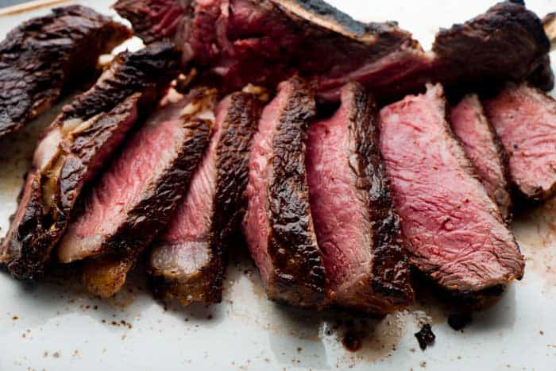

Perfect steak

This recipe shows you a simple way to cook the perfect steak using only salt,pepper, and a cast iron.
Ingredients
- ~1lb steak(New york strip)
- Salt and pepper
Directions
- Let steak sit at room temp for about 20 minutes
- Season both sides with salt and pepper
- Preheat the castiron on high heat for about 3 minutes or until pan is Veryhot.
- Sear the fatty side of the steak for 30 seconds and then place the steak on one side for 5 minutes and 40 seconds. Flip the steak and let it cook for another 5 minutes and 40 seconds.
- Let steak rest for 5-8 minutes before cutting.
- Enjoy!
Return to home